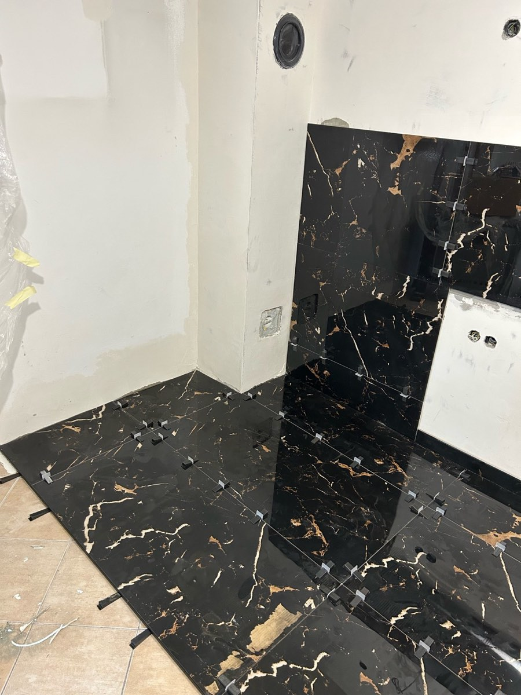
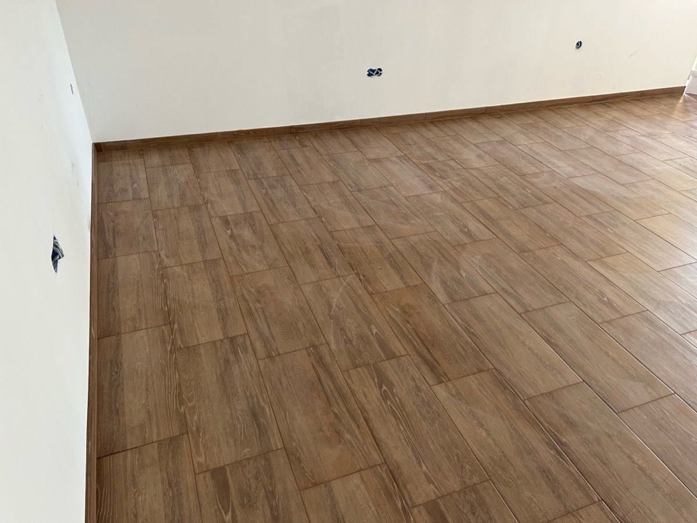
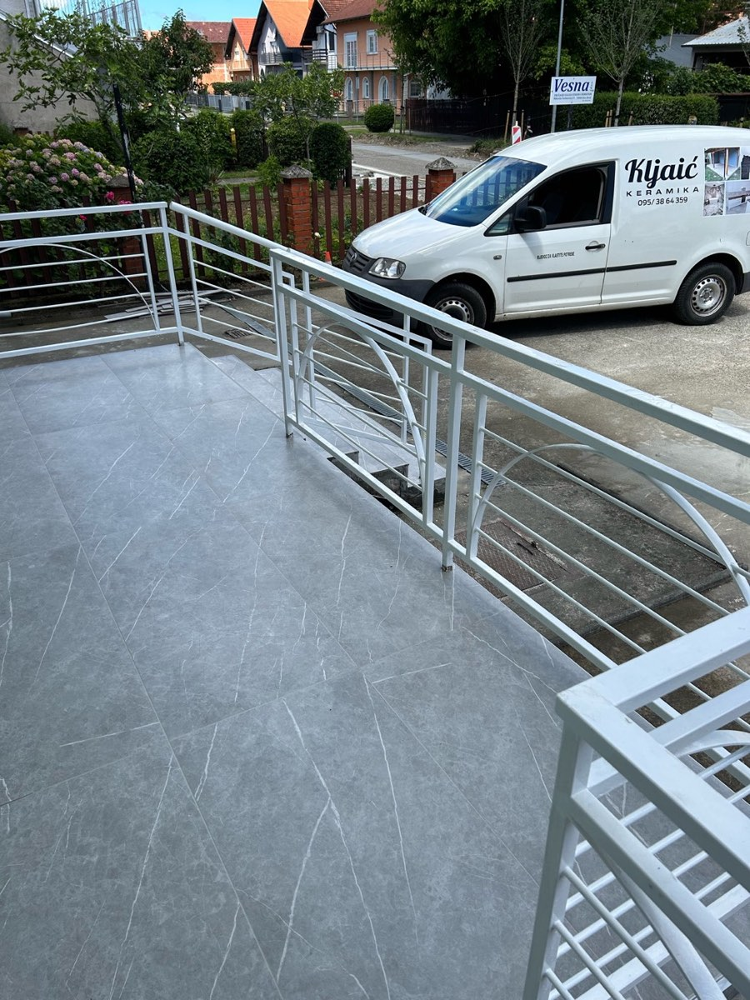
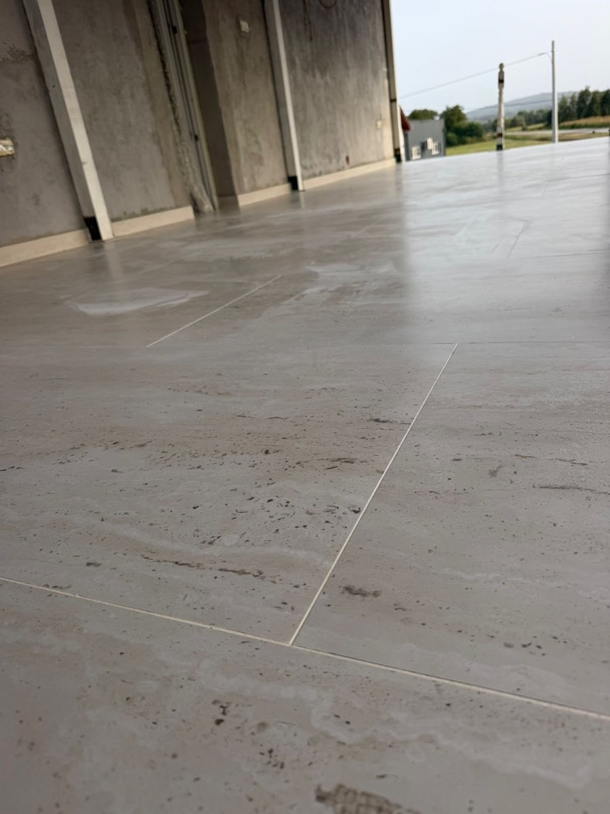
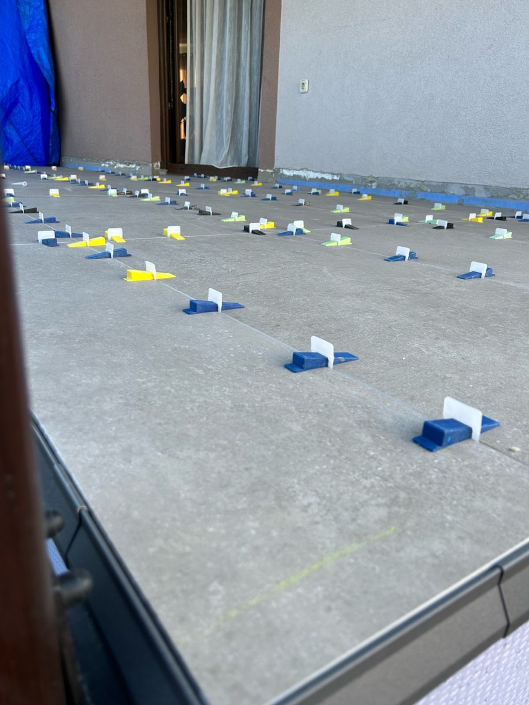
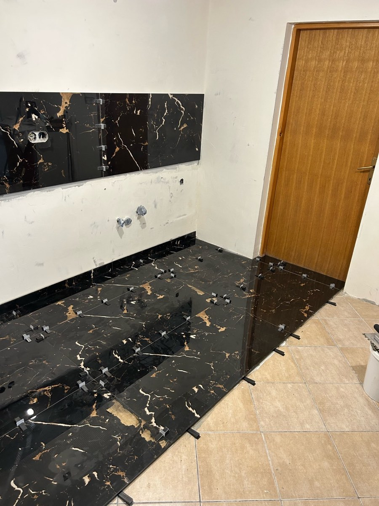
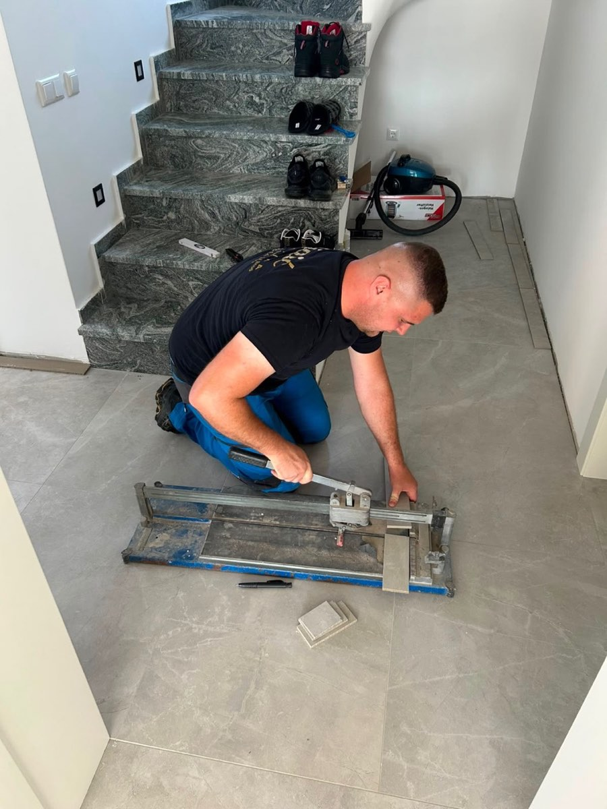

Priprema podloga
Ravna i čvrsta podloga je temelj svakog poda i zida. Priprema dolazi prije prve pločice.
Keramika Kljaić je obrt Matea Kljaića iz Podvinja kraj Slavonskog Broda. Postavljamo podne i zidne pločice svih vrsta i veličina formata, radimo hidroizolaciju, pripremu podloga i kompletne adaptacije.


Ravna i čvrsta podloga je temelj svakog poda i zida. Priprema dolazi prije prve pločice.
Podne i zidne obloge svih vrsta i veličina formata, u kupaonicama, kuhinjama, sobama i na terasama.
Zaštita kupaonica, tuševa i terasa od vlage prije polaganja obloga.
Velike ploče na podu i zidu, uz sustav za niveliranje za ravnu plohu bez stepenica na spojevima.
Mramorni uzorci, stubišta i detalji poput niša, špaleta i rubova koji se vide iz blizine.
Kompletno renoviranje prostora, od uklanjanja starog do gotove kupaonice ili stana.
Ostali radovi po dogovoru. Opišite posao telefonom pa se dogovorimo.
Nazovite 095 386 4359 i opišite što treba.










KERAMIKA KLJAIĆ je obrt za keramičarske radove vlasnika Matea Kljaića, sa sjedištem u Podvinju kraj Slavonskog Broda. Registrirana djelatnost obrta je postavljanje podnih i zidnih obloga.
Radimo podne i zidne obloge svih vrsta i veličina formata, od klasičnih pločica do XXL ploča u mramornom uzorku, te kompletna renoviranja. Novi radovi redovito se pojavljuju na Instagramu @keramika_kljaic.
Telefon 095 386 4359 ili e-pošta mkljaic26@gmail.com.
Što se radi, okvirna kvadratura, mjesto i fotografija. Tako je razgovor kraći.
Vrsta radova, materijal i termin dogovaraju se izravno s vlasnikom obrta.
Uvijek na dogovor!
Pripremu podloga, postavljanje podnih i zidnih pločica, hidroizolaciju, polaganje velikih (XXL) formata, adaptacije te druge građevinske radove po dogovoru. Registrirana djelatnost obrta je postavljanje podnih i zidnih obloga.
Da. XXL formati su jedna od usluga koje obrt navodi na svom letku, a na fotografijama radova vide se velike ploče u kupaonicama, na podovima i na terasama.
Da, hidroizolacija je navedena među uslugama obrta, uz pripremu podloga i postavljanje pločica.
Nazovite 095 386 4359 ili pošaljite e-poruku na mkljaic26@gmail.com. Napišite što treba napraviti, okvirnu kvadraturu i mjesto radova, a pomažu i fotografije prostora. Obrazac na ovoj stranici složit će takvu poruku umjesto vas.
Sjedište obrta je u Podvinju (35107, Slavonski Brod). Za lokaciju radova i termin dogovorite se telefonom.
Najbrže je telefonom. Za ponudu pomaže kratak opis radova, okvirna kvadratura i fotografija prostora.